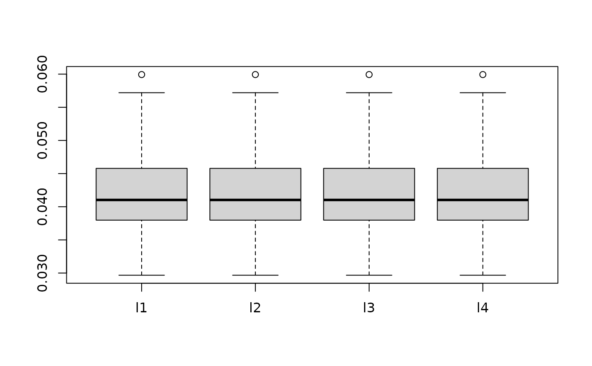
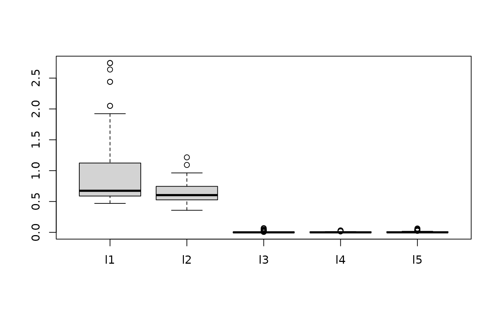

Implementation of Bayesian Additive Regression Kernels with Feature Selection for Nonparametric Regression for Gaussian regression and classification for binary Probit models
Details
BARK is a Bayesian sum-of-kernels model or because of the
Bayesian priors is a Bayesian Additive Regression Kernel model.
For numeric response \(y\), we have
\(y = f(x) + \epsilon\),
where \(\epsilon \sim N(0,\sigma^2)\).
For a binary response \(y\), \(P(Y=1 | x) = F(f(x))\), where \(F\)
denotes the standard normal cdf (probit link).
In both cases, \(f\) is the sum of many Gaussian kernel functions.
The goal is to have very flexible inference for the unknown
function \(f\).
bark uses an approximated Cauchy process as the prior distribution
for the unknown function \(f\).
Feature selection can be achieved through the inference
on the scale parameters in the Gaussian kernels.
BARK accepts four different types of prior distributions through setting
values for selection (TRUE or FALSE), which allows scale parameters
for some variables to be set to zero, removing the variables from the
kernels selection = TRUE; this enables either soft shrinkage or hard
shrinkage for the scale
parameters. The input common_lambdas (TRUE or FALSE) specifies whether
a common scale parameter should be used for all predictors (TRUE) or
if FALSE allows the scale parameters to differ across all variabless
in the kernel.
References
Ouyang, Zhi (2008) Bayesian Additive Regression Kernels. Duke University. PhD dissertation, Chapter 3.
See also
Other bark functions:
bark-package-deprecated,
bark(),
sim_Friedman1(),
sim_Friedman2(),
sim_Friedman3(),
sim_circle()
Examples
# \donttest{
# Simulate regression example
# Friedman 2 data set, 200 noisy training, 1000 noise free testing
# Out of sample MSE in SVM (default RBF): 6500 (sd. 1600)
# Out of sample MSE in BART (default): 5300 (sd. 1000)
traindata <- sim_Friedman2(200, sd=125)
testdata <- sim_Friedman2(1000, sd=0)
fit.bark.d <- bark(y ~ ., data = data.frame(traindata),
testdata = data.frame(testdata),
classification = FALSE,
selection = FALSE,
common_lambdas = TRUE)
boxplot(as.data.frame(fit.bark.d$theta.lambda))

mean((fit.bark.d$yhat.test.mean-testdata$y)^2)
#> [1] 3830.877
# Simulate classification example
# Circle 5 with 2 signals and three noisy dimensions
# Out of sample erorr rate in SVM (default RBF): 0.110 (sd. 0.02)
# Out of sample error rate in BART (default): 0.065 (sd. 0.02)
traindata <- sim_circle(200, dim=5)
testdata <- sim_circle(1000, dim=5)
fit.bark.se <- bark(y ~ ., data= data.frame(traindata),
testdata= data.frame(testdata),
classification=TRUE,
selection=TRUE,
common_lambdas = FALSE)
boxplot(as.data.frame(fit.bark.se$theta.lambda))

mean((fit.bark.se$yhat.test.mean>0)!=testdata$y)
#> [1] 0.02
# }